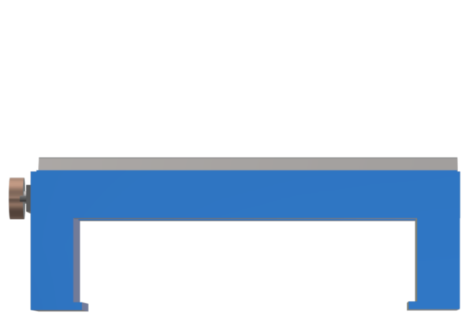
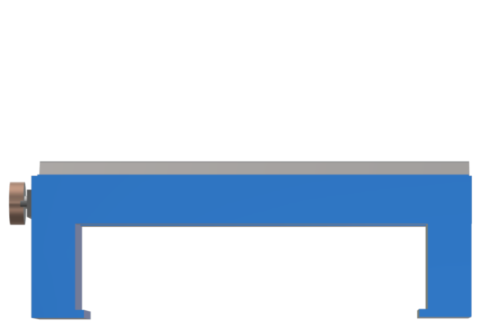
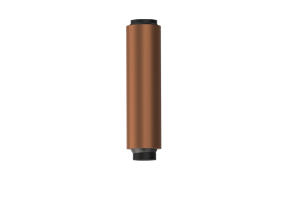
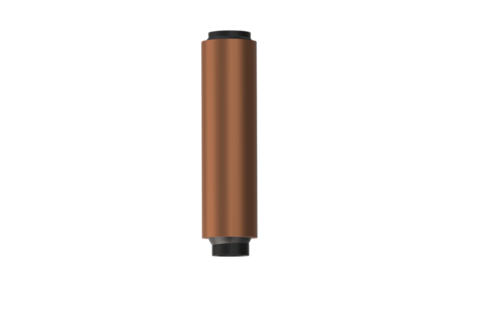

Concept Check:
Q 1. In a Newton's Ring Experiment, the diameter of 15th ring was found to be cm, and that of the 5th ring is cm. If the radius of curvature is 100cm, then the wavelength of light is Submit
 

 
